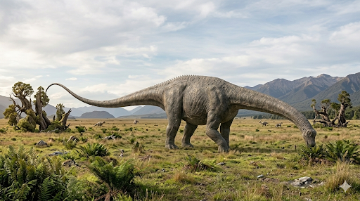

דיפלודוקוס
The Double Beam: Diplodocus carnegii

תיק מחקר: נתונים אבולוציוניים משולבים
תקופת פעילות
לפני כ-154 עד 152 מיליון שנה
תור היורה המאוחר (גיל הקימרידג'). שלט במישורי ההצפה העתיקים לפני היפרדות היבשות המלאה.
מסה ומשקל
12 עד 16 טונות
קל משקל באופן מפתיע. האבולוציה "רוקנה" את עצמותיו מחומר ויצרה מערכת חללי אוויר (Pneumatization) המקושרת למערכת הנשימה.
ממדים (אורך)
עד 27 מטרים!
זנבו וצווארו היוו למעלה מ-80% מאורכו הכולל. פרטים מסוימים מהסוג "סייסמוזאורוס" (שכיום משויך לדיפלודוקוס) הגיעו אולי ל-33 מטרים.
מיקום גיאוגרפי ואקלים
המערב התיכון, ארה"ב (תצורת מוריסון)
נמצא בעיקר בקולורדו, יוטה, ויומינג, ומונטנה. האזור התאפיין בסביבה צחיחה למחצה עם עונות רטובות ויבשות קיצוניות, מה שאילץ את עדרי הדיפלודוקוס לנדוד בחיפוש אחר מים וצמחייה.
סיווג טקסונומי קריטי
דינוזאור זאורופוד (Diplodocidae)
מוביל משפחת הדיפלודוקיים (הכוללת גם את האפטוזאורוס והברונטוזאורוס). מאופיין בגולגולת מוארכת דמוית-סוס, נחיריים בחלק העליון של הראש, ושיניים דמויות יתדות או עפרונות הממוקמות רק בחזית הלסת.
01 // ניתוח אטימולוגי נרחב
| החלק בשם | שפת מקור | פירוש ומשמעות היסטורית |
|---|---|---|
| Diplo- | יוונית עתיקה (διπλόος / diploos) | כפול (Double) מתייחס למבנה הייחודי של עצמות ה-Chevron – אלו עצמות בצורת V הממוקמות מתחת לחוליות הזנב ונועדו להגן על העצבים וכלי הדם הגדולים העוברים שם. |
| -docus | יוונית עתיקה (δοκός / dokos) | קורה / קרש (Beam) הוענק ב-1878 על ידי עותניאל צ'ארלס מארש (O.C. Marsh). לדיפלודוקוס היו עצמות תחתונות בזנב בעלות תצורה של *שתי* בליטות (המשתרעות קדימה ואחורה), במקום אחת כמו לרוב הזוחלים. זה העניק לזנב חוזק אדיר כשנגרר על הקרקע והפך אותו לנשק. המשמעות המלאה: **"קורה כפולה"**. |
| carnegii | לטיניזציה של שם משפחה | לכבודו של אנדרו קרנגי (1901) מין הדגל והמפורסם ביותר נקרא על שמו של איל הפלדה האמריקאי והנדבן אנדרו קרנגי (Andrew Carnegie). לאחר שמימן את המשלחות לוויומינג שגילו את השלד השלם (Dippy), חוקריו הקדישו לו את התגלית כהוקרה על תרומתו חסרת התקדים למדע הפלאונטולוגיה. |
02 // תולדות הגילוי והתעלומה הבלשית
הסיבה למשלחות: מלחמות העצמות (Bone Wars)
הדיפלודוקוס הראשון התגלה ב-1877 על ידי בנג'מין מאדג' ואדוארד וויליסטון תחת ניהולו של **עותניאל צ'ארלס מארש**. זו הייתה שיאה של "מלחמות העצמות" – היריבות המרה בין מארש לאדוארד דרינקר קופ. הלחץ להוציא מפלצות ענק מהר ככל האפשר הוביל לא פעם לעבודה מרושלת, הריסת ממצאים יקרים בדינמיט, וטעויות זיהוי חמורות - כפי שנראה מיד בפרשת "תעלומת הגולגולת האבודה".
נסיבות הגילוי של "דיפי" וכספו של קרנגי
השלדים המרשימים התגלו בעזרת כספו של **אנדרו קרנגי**. בשנת 1899, משלחת במימונו חפרה באתר צ'יפ קריק בוויומינג וחשפה שלד עצום וכמעט שלם שזכה לכינוי החיבה "דיפי" (Dippy). בשנת 1902, בעת שקרנגי אירח בטירתו בסקוטלנד את מלך אנגליה אדוארד השביעי, המלך הבחין באיור של הדינוזאור ושאל "האם אוכל לקבל אחד כזה למוזיאון הבריטי?". בעקבות כך, קרנגי מימן עשרות יציקות גבס מדויקות ותרם אותן למוזיאונים מרכזיים ברחבי העולם (לונדון, פריז, ברלין, ועוד), והפך את הדיפלודוקוס ל"שגריר הפרהיסטורי הראשון".
תעלומת הגולגולת האבודה (The Skull Mystery)
הסיפור של "תעלומת הגולגולת" הוא סיפור בלשי היסטורי מרתק המדגים את הסכנות שב"מלחמות העצמות":
- 1. הטעות של מארש (1870-1890): מכיוון שצוואר הזאורופודים ארוך ושברירי, הגולגולת מתנתקת מהגוף כמעט מיד לאחר המוות ונשטפת במים. מארש מצא גופות ענק ללא ראש. באותה מחצבה נחו גולגולות קופסתיות וקצרות של דינוזאור אחר (קמרזאורוס). בשל הלחץ לפרסם מהר ולנצח את יריבו, מארש הפעיל היגיון פשוט ושגוי: "גוף ענק ושמן חייב גולגולת ענקית וקצרה כמו של פיל". הוא פשוט לקח את הגולגולת השגויה והרכיב אותה על השלד. את הגולגולות הארוכות והעדינות שהיו שם הוא שייך בטעות לדינוזאורים קטנים יותר.
- 2. ההשתקה: ויליאם הולנד, מנהל מוזיאון קרנגי (שם הוצב "דיפי"), חשד די מוקדם שהגולגולת של מארש שגויה. אך מארש נחשב אז ל"אל הפלאונטולוגיה", ולתקן אותו היה בחזקת כפירה. במשך עשרות שנים, מוזיאונים ברחבי העולם העדיפו להשאיר את הגולגולות הקופסתיות השגויות על שלדי הדיפלודוקוס והאפטוזאורוס במקום להסתכן במבוכה פומבית.
- 3. הפיצוח של 1979 (הארכיונים מדברים): האמת לא התגלתה בחפירה חדשה בבוץ, אלא בחפירה בארכיונים ישנים. בשנת 1979, הפלאונטולוג **דייוויד ברמן** והפיזיקאי חובב הדינוזאורים **ג'ון מקינטוש** עברו על יומני השדה והמפות המקוריות שצוירו ביד על ידי פועלי המחצבה של מארש במאה ה-19 (במיוחד מפות של הפועל ארתור לייקס). הם הוכיחו באמצעות המפות באופן חד-משמעי: הגולגולות הארוכות, דמויות-הסוס (Peg-tooth skulls), נמצאו כשהן **מחוברות ישירות או מונחות בסמיכות אינטימית** לחוליות הצוואר של הדיפלודוקוס במחצבה. מארש פשוט התעלם מרישומי השדה של צוותו. בעקבות מחקרם, מוזיאונים בעולם נאלצו לנתק את הגולגולות השגויות ולהרכיב סוף סוף את הגולגולת המקורית והפחוסה של הדיפלודוקוס.
אקולוגיה וביומכניקה: הגשר התלוי ושאיבת צמחים
הדיפלודוקוס הוחזק באופן אופקי כמעט לחלוטין – כמו גשר תלוי הנתמך על ידי ארבעה עמודי רגליים איתנים. מרכז הכובד שלו היה מאוזן באופן מושלם בין הצוואר הארוך לזנב העצום.
תזונה (Diet) ומחזור העיכול
הדיפלודוקוס התמחה ב"גיזום" (Browsing) של צמחייה נמוכה עד בינונית, כגון שרכים ועלוות קרובות למים. שיניו היו דקות, צרות ודמויות יתדות (Peg-like teeth), מרוכזות רק בקדמת הפה.
הוא השתמש בשיניו כמו "מסרק" כפול: הוא סגר את לסתותיו החלשות יחסית על ענף שופע, ופשוט משך את ראשו חזק אחורה באמצעות שרירי הצוואר החזקים שלו כדי לתלוש את כל העלים בבת אחת (Branch-stripping). מכיוון שלא יכל ללעוס, הוא בלע הכול שלם. בקיבתו העצומה, המזון עבר תהליך תסיסה (Fermentation) ממושך בעזרת חיידקים, בדומה לקיבות פילים או פרות כיום.
דיבייט הצוואר ונשק הזנב העל-קולי
**ויכוח הצוואר:** בעבר ציירו אותם עומדים זקופים כמו ברבורים. אולם, מודלים תלת-ממדיים של חוליות הדיפלודוקוס הראו שהצוואר היה גמיש κυρίως פנימה ורחבה (ימינה ושמאלה), אך מוגבל מאוד בהרמה כלפי מעלה. למרות זאת, חוקרים טוענים שאם הדיפלודוקוס היה צריך להגיע לצמרת גבוהה, הוא יכול היה להיעמד על שתי רגליו האחוריות, ולהישען על זנבו השרירי כרגל שלישית של "חצובה" (Tripod stance).
**זנב הפלא:** הזנב שלו היה פלא פיזיקלי, מורכב מ-80 חוליות שונות (כפליים מדינוזאורים אחרים). קצה הזנב היה דק כמו שוט. מודלים ממוחשבים הוכיחו כי הצלפה בזנב הזה הייתה כה מהירה שקצהו שבר את מהירות הקול (1,200 קמ"ש), ויצר "בום על-קולי" (Sonic boom) מחריש אוזניים. זה שימש לתקשורת למרחקים ולהברחת טורפים מאימים כמו האלוזאורוס.
אסטרטגיית רבייה וקצב גדילה פנומנלי
זאורופודים ענקיים כמו הדיפלודוקוס מעולם לא דגרו על ביציהם, משום שהם היו מוחצים אותן. במקום זאת, הם נקטו ב"אסטרטגיית רבייה המונית" (r-selection). נקבות הדיפלודוקוס הטילו עשרות ביצים קטנות יחסית (בגודל של אשכוליות או כדורי כדורגל) בתעלות שנחפרו באדמה או בצמחייה מרקיבה, ופשוט נטשו אותן. הבקועים הקטנים נאלצו לשרוד בכוחות עצמם מרגע לידתם בעולם אכזר מלא בטורפים.
**מרוץ הגדילה:** הדרך היחידה של הדיפלודוקוס הצעיר להינצל מטורפים הייתה לגדול כמה שיותר מהר. מחקרי חיתוך עצם הראו שקצב הגדילה שלהם היה המהיר ביותר בתולדות החולייתנים: יצור שבקע במשקל קילוגרמים בודדים, העלה **עשרות קילוגרמים בכל חודש**, והגיע למשקל של עשרות טונות ולבגרות מינית בתוך כ-10 שנים בלבד. קצב מטאבולי אדיר זה דרש צריכת קלוריות אובססיבית ללא הפסקה.